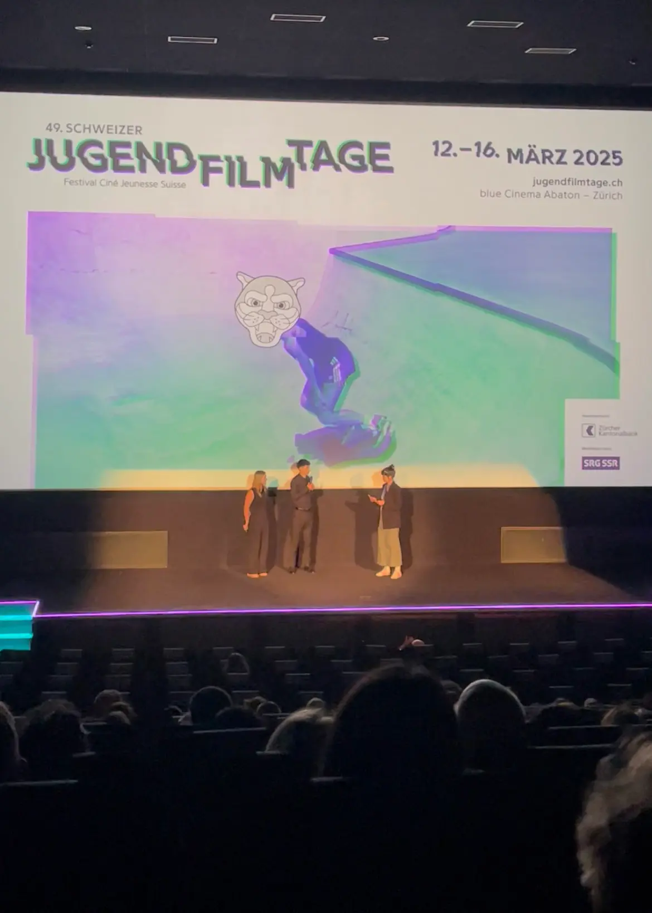
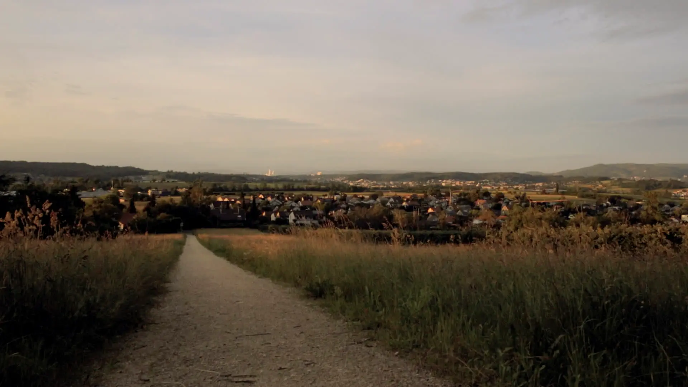
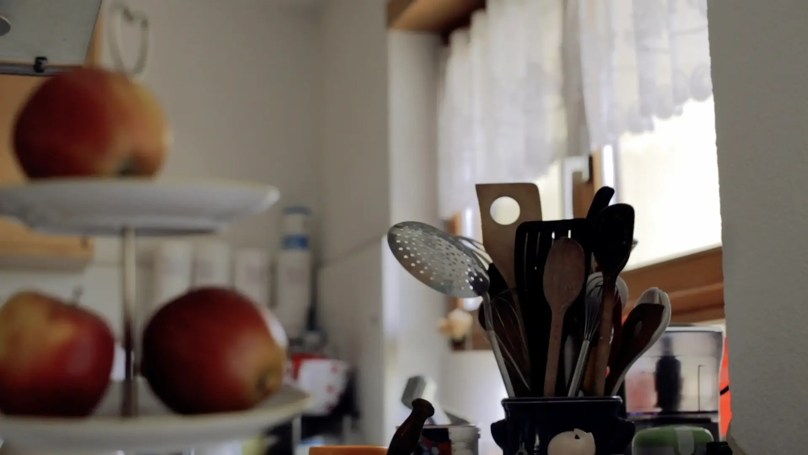
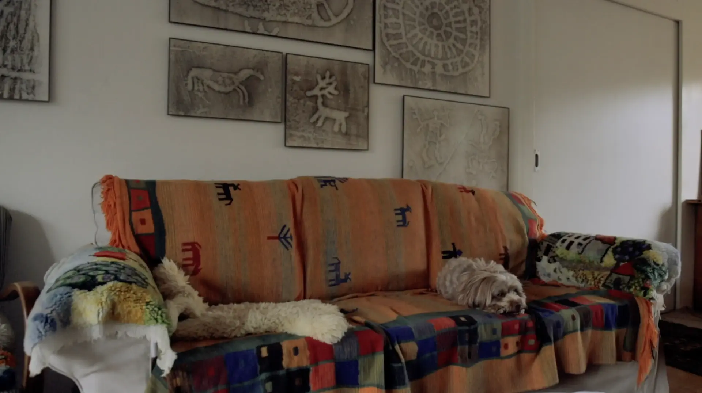
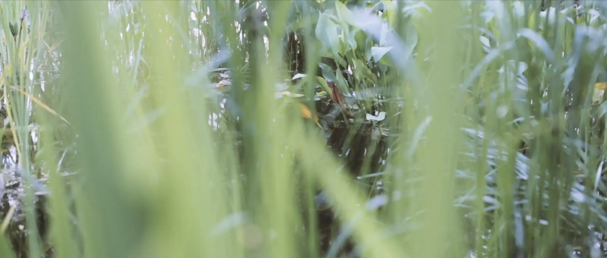
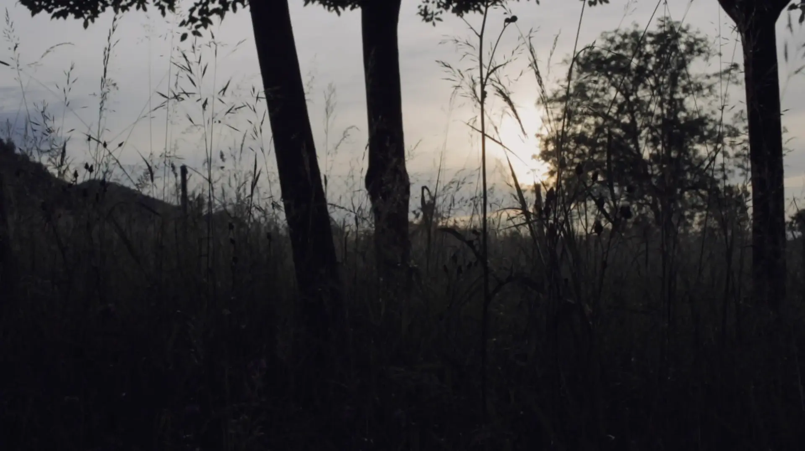

Year
2024
Duration
2 weeks
Mentoring
Jonas Schaffter
Team
Nominations
( 2025 )
Links
" Furtgoh " is an essay film about the eternal search for home. A girl who simply wanted to get away from home to find happiness. A woman who says she has no dreams, but is convinced that she can fulfil others’ dreams.

" Furtgoh " was officially nominated and shown in Category D at the 49th Schweizer Jugendfilmtage 2025 in Zurich ( Switzerland ).

In the film, we accompany the protagonist Renée as she looks back on a bygone era, grappling with the challenges and dreams of her youth. In doing so, she explores themes that question her homeland, identity, and desires.


As a therapist, Renée develops a feeling for people and learns to deal with their problems. This results in obligations towards others and a loss of sight of her own needs. Marked by her own stroke of fate, Renée repeatedly finds herself on the fine line between caring for others and protecting herself. Where does responsibility for others end and responsibility for oneself begin?

